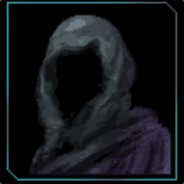

Warbenders Commits
war_init
war_concepts

Quill
war_init/main/warboat#0001
Added War boat Model
Implemented a war boat camera model that will transport players into their country.
#
Quill
war_init/
Switched Project Origin
Changed editor Warbenders would be made with from Unity Engine to Unreal Editor 5
#
Warbenders
war_init/
Added Repo 'war_init'
Added Repository for future commits to Warbenders
#